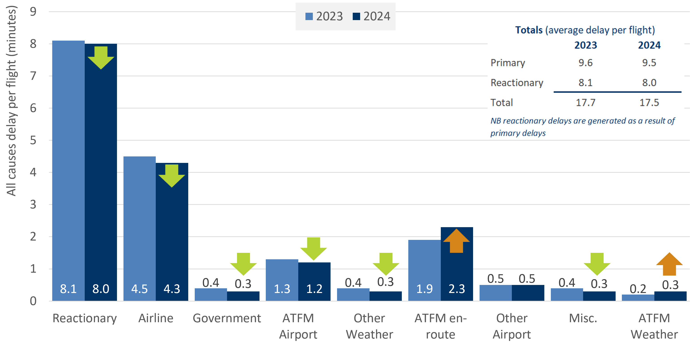
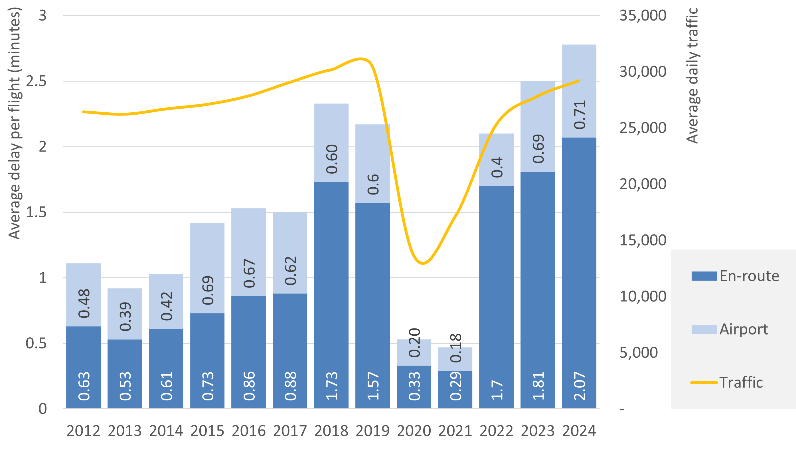

4 Air traffic delay
4.1 Definition
Evolution in reported delays taking two perspectives:
The view of airlines and passengers considering all causes of delay
The view of the Network Manager focusing on Air Traffic Flow Management delays
4.2 EUROCONTROL recommended values
Below two different views are provided: first, the values recommended for Airspace Users and Passengers, followed by a zoom-in to the purely ATFM-related delays.
4.2.1 All causes of delay
The figure below presents an overview of all causes of delay reported by the airlines in 2020 and 2021. These figures are estimated by EUROCONTROL Central Office of Delay Analysis (CODA), and they are calculated based on the comparison of the scheduled and actual flight timings and can be used in studies that look into the different causes of flight delay experienced by passengers and airlines.
Source: EUROCONTROL CODA (2019) All-Causes Delay to Air Transport in Europe[1]
4.2.2 ATFM delay
Looking specifically into ATFM delay, the figure below shows the daily traffic and traffic flow delay per flight (en-route and at airport) for the period 2012-2021. These figures are calculated by the Network Manager based on the flight plans and include the planned ATFM delays due to the restrictions that may be applied in the airspace.

Source: EUROCONTROL (2022) Network Operations Report 2021[2]
The flow management delay constitutes only a fraction of primary delay from all causes, and around half of all delay is reactionary (i.e., delay caused by late arrival of aircraft, crew, passengers or baggage from previous journeys) rather than primary (i.e., delay other than reactionary).
4.3 When to use the input?
We recommend using all causes of delay provided by CODA when analysing the impacts on airlines or on passengers/society (e.g., an airline upgrading the avionics in their aircraft; airport expansion, etc.). On the other hand, ATFM delay is recommended to be used when analysing projects aiming at improving Flow Management.
4.4 Comment
Looking at both figures above, it can be observed that the ATFM delay, both at the airport and en-route, is higher when looking at the numbers provided by the airlines rather than that observed by the Network Manager. This occurs because the delay numbers provided by the Network Manager account for the so-called planned delay due to restrictions in the airspace, while the numbers provided by the airlines cover the total delay they attribute to ATFM, irrespective from the restrictions or any planned ATFM delays.
Another important point to take into consideration when analysing the recommended values is the impact of the COVID-19 pandemic. Both, the all-causes delay and the ATFM delay were impacted by the significant reduction in air traffic in 2020 and 2021, resulting into a strong drop in the total delay duration. Thus, when looking into these numbers it is equally important to consider the situation prior to 2020. For the All-causes delay this information can be found in the previous editions of CODA Digest, available in EUROCONTROL library.
4.6 Recommended sources
More information on the work performed by CODA, as well as the corresponding publications can be found at All-causes delay analysis interactive dashboard.
Historical data and other information published by the Network Manager can be accessed and downloaded from the EUROCONTROL Network Operations Monitoring and Reporting web page.
Reports containing the same data from previous years are available in the EUROCONTROL library.
Standard Inputs for EUROCONTROL Cost-Benefit Analyses - 4 Air traffic delay Standard Inputs for EUROCONTROL Cost-Benefit Analyses - 4 Air traffic delay Standard Inputs for EUROCONTROL Cost-Benefit Analyses - 4 Air traffic delay Standard Inputs for EUROCONTROL Cost-Benefit Analyses
[1]
C. Walker, “All-causes delay and cancellations to air transport in Europe – Annual report for 2021,” EUROCONTROL CODA, Mar. 2022 [Online]. Available: https://www.eurocontrol.int/sites/default/files/2022-04/eurocontrol-coda-digest-annual-report-2021.pdf. [Accessed: Nov. 28, 2022]
[2]
“Network operations report 2021,” EUROCONTROL, May 2022 [Online]. Available: https://www.eurocontrol.int/sites/default/files/2022-05/eurocontrol-annual-nor-2021-main-report.pdf. [Accessed: Nov. 28, 2022]